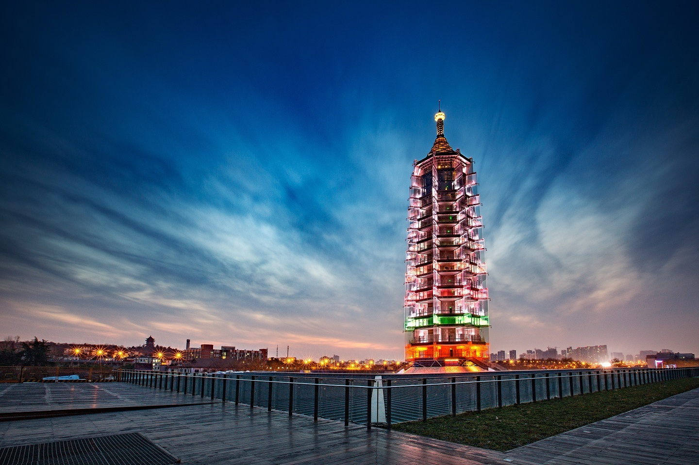
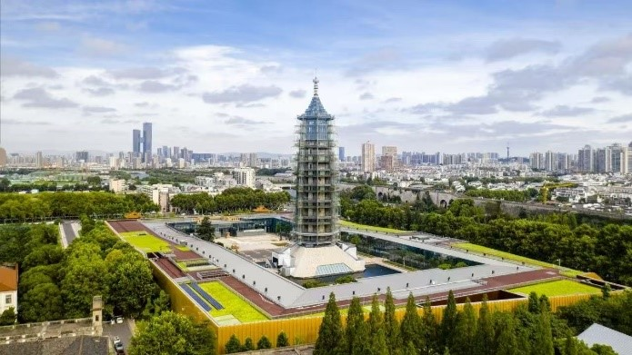

2015 to 2025
Ruins Museum and Rebuilt Pagoda
A structured study of the museum-era site, contemporary reconstruction, and the ongoing public life of Bao'en Temple.
Overview
The Grand Bao'en Temple Ruins Museum reopened the site as a hybrid of archaeology, civic interpretation, and contemporary memorial architecture.


Historical Significance
This phase reframed the site as both ruin and public institution. Instead of reconstructing the old monument literally, the project preserves excavated remains and presents the layered history of Bao'en Temple to visitors.
Spatial and Architectural Reading
The rebuilt pagoda and museum architecture create a measured dialogue between new construction and archaeological fragments. Circulation, controlled lighting, and vertical emphasis all support a contemporary reading of the historical site.
Visual Archive

Memory and Legacy
Modern Bao'en Temple demonstrates how a lost monument can survive through curation, interpretation, and carefully staged continuity rather than direct imitation.